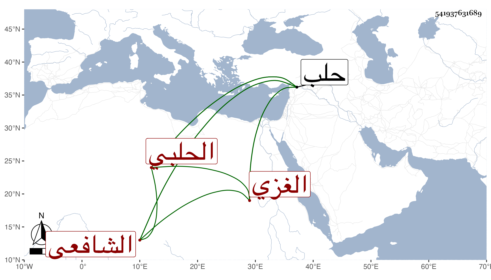

0902Sakhawi.DawLamic.ITO20230111-ara1.EIS1600.541937631689
Biography ID: 541937631689
إبراهيم بن أحمد بن يونس برهان الدين أبو اسحاق بن الفاضل شهاب الدين الغزي الأصل الحلبي الشافعي نزيل المدرسة الشرفية بحلب والآتي أبوه ويعرف بابن الضعيف بالتصغير والتثقيل ولد في حدود سنة اثنتين وتسعين وسبعمائة وسمع على ابن الصديق بعض الصحيح وحدث سمع منه الفضلاء ولقيته بحلب فسمعت عليه ثلاثيات الصحيح وغيرها وكان اميا خيرا محافظا على الصلوات والخير كثير الاحسان للغرباء مع الفاقة والتقلل والانجماع عن الناس والسذاجة ولكثرة مواظبته للمواعيد ومجالس البرهان صار يستحضر أشياء وهو ممن أسر في الفتنة وحضر ببلاد العجم مجالس أهل العلم . مات سنة إحدى وثمانين على ما تحرر .
